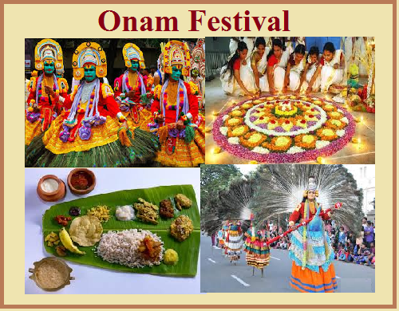
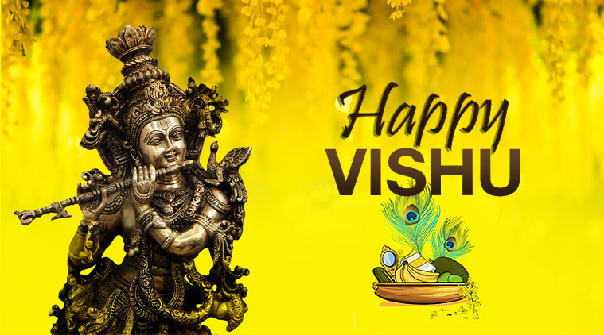

ONAM
Onam! The national festival of Kerala celebrated for the coming of the King Mahabali. This festival falls in August-September and has a wonderful story attached to it.
Onam is a very important festival to the people of Kerala and has been celebrated in a grand manner every year. The houses are decorated with florals for ten days before the actual day.
On the day of Onam, presents are exchanged, relatives meet each other no matter how far and sit together to feast on Plantain leaves.
VISHU
it is the Second most important festival of Kerala as it marks the New year which normally falls on the 14th, 15th, or 16th of April. This day determines how the rest of the year is going to be for the malayalis.
It is believed that the whole year depends on the first thing that the person sees on the morning of the Vishu.
CHRISTMAS

Christianity has also taken its toll in Kerala with the number of Christians increasing day by day. Due to this reason, Christmas is a very big festival in Kerala.
BACK TO LIST